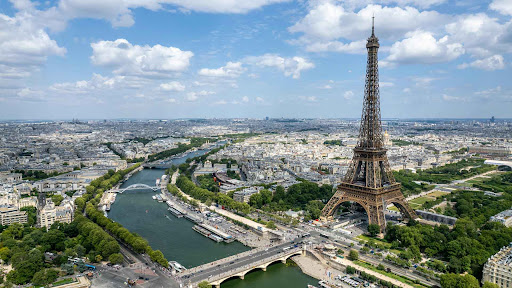

P.A.R.I.S
Одного разу я побував у Парижі – місті, яке завжди вабило своєю романтикою та особливою атмосферою. Як тільки я вийшов із літака, мене зустрів легкий вітерець із запахом кави та свіжої випічки.

Вузькі вулички Латинського кварталу вели мене до маленьких книжкових крамниць і затишних кафе, де можна було годинами сидіти з філіжанкою запашного еспресо, спостерігаючи за перехожими. Прогулюючись набережною Сени, я милувався старовинними мостами, художниками, що малювали портрети туристів, і продавцями букіністичних книжок, які розкладали свої скарби на зелених прилавках.

Величний Нотр-Дам зустрів мене своєю готичною красою, а Ейфелева вежа вночі зачарувала мерехтінням вогнів. В Луврі я загубився серед шедеврів мистецтва, затримавшись біля Мони Лізи, намагаючись зрозуміти її загадкову усмішку. А в садах Тюїльрі я просто насолоджувався спокоєм, слухаючи музику вуличних виконавців.
Не обійшлося й без смаколиків: хрумкі круасани, ніжні макаруни, запашний багет і, звісно ж, ароматне червоне вино у затишному бістро. Париж залишив у моєму серці особливий слід, адже це місто, де історія зустрічається з сучасністю, де кожен куточок дихає мистецтвом, а атмосфера надихає мріяти. Це місце, куди хочеться повертатися знову і знову..
Ця поїздка залишила неймовірні враження. Париж — це місто, яке захватує подих!